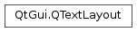

QTextLayout¶
Synopsis¶
Functions¶
- def
additionalFormats() - def
beginLayout() - def
boundingRect() - def
cacheEnabled() - def
clearAdditionalFormats() - def
clearFormats() - def
clearLayout() - def
createLine() - def
cursorMoveStyle() - def
draw(p, pos[, selections=list()[, clip=QRectF()]]) - def
drawCursor(p, pos, cursorPosition) - def
drawCursor(p, pos, cursorPosition, width) - def
endLayout() - def
font() - def
formats() - def
isValidCursorPosition(pos) - def
leftCursorPosition(oldPos) - def
lineAt(i) - def
lineCount() - def
lineForTextPosition(pos) - def
maximumWidth() - def
minimumWidth() - def
nextCursorPosition(oldPos[, mode=SkipCharacters]) - def
position() - def
preeditAreaPosition() - def
preeditAreaText() - def
previousCursorPosition(oldPos[, mode=SkipCharacters]) - def
rightCursorPosition(oldPos) - def
setAdditionalFormats(overrides) - def
setCacheEnabled(enable) - def
setCursorMoveStyle(style) - def
setFlags(flags) - def
setFont(f) - def
setFormats(overrides) - def
setPosition(p) - def
setPreeditArea(position, text) - def
setRawFont(rawFont) - def
setText(string) - def
setTextOption(option) - def
text() - def
textOption()
Detailed Description¶
The
PySide2.QtGui.QTextLayoutclass is used to lay out and render text.It offers many features expected from a modern text layout engine, including Unicode compliant rendering, line breaking and handling of cursor positioning. It can also produce and render device independent layout, something that is important for WYSIWYG applications.
The class has a rather low level API and unless you intend to implement your own text rendering for some specialized widget, you probably won’t need to use it directly.
PySide2.QtGui.QTextLayoutcan be used with both plain and rich text.
PySide2.QtGui.QTextLayoutcan be used to create a sequence ofPySide2.QtGui.QTextLineinstances with given widths and can position them independently on the screen. Once the layout is done, these lines can be drawn on a paint device.The text to be laid out can be provided in the constructor or set with
PySide2.QtGui.QTextLayout.setText().The layout can be seen as a sequence of
PySide2.QtGui.QTextLineobjects; usePySide2.QtGui.QTextLayout.createLine()to create aPySide2.QtGui.QTextLineinstance, andPySide2.QtGui.QTextLayout.lineAt()orPySide2.QtGui.QTextLayout.lineForTextPosition()to retrieve created lines.Here is a code snippet that demonstrates the layout phase:
leading = fontMetrics.leading() height = 0 widthUsed = 0 textLayout.beginLayout() while True: line = textLayout.createLine() if not line.isValid(): break line.setLineWidth(lineWidth) height += leading line.setPosition(QPointF(0, height)) height += line.height() widthUsed = qMax(widthUsed, line.naturalTextWidth()) textLayout.endLayout()The text can then be rendered by calling the layout’s
PySide2.QtGui.QTextLayout.draw()function:painter = QPainter(self) textLayout.draw(painter, QPoint(0, 0))For a given position in the text you can find a valid cursor position with
PySide2.QtGui.QTextLayout.isValidCursorPosition(),PySide2.QtGui.QTextLayout.nextCursorPosition(), andPySide2.QtGui.QTextLayout.previousCursorPosition().The
PySide2.QtGui.QTextLayoutitself can be positioned withPySide2.QtGui.QTextLayout.setPosition(); it has aPySide2.QtGui.QTextLayout.boundingRect(), and aPySide2.QtGui.QTextLayout.minimumWidth()and aPySide2.QtGui.QTextLayout.maximumWidth().See also
-
class
PySide2.QtGui.QTextLayout¶ -
class
PySide2.QtGui.QTextLayout(text) -
class
PySide2.QtGui.QTextLayout(text, font[, paintdevice=nullptr]) -
class
PySide2.QtGui.QTextLayout(b) Parameters: - b –
PySide2.QtGui.QTextBlock - font –
PySide2.QtGui.QFont - paintdevice –
PySide2.QtGui.QPaintDevice - text – unicode
Constructs an empty text layout.
See also
Constructs a text layout to lay out the given
text.Constructs a text layout to lay out the given
textwith the specifiedfont.All the metric and layout calculations will be done in terms of the paint device,
paintdevice. Ifpaintdeviceis 0 the calculations will be done in screen metrics.Constructs a text layout to lay out the given
block.- b –
-
PySide2.QtGui.QTextLayout.CursorMode¶ Constant Description QTextLayout.SkipCharacters QTextLayout.SkipWords
-
PySide2.QtGui.QTextLayout.additionalFormats()¶ Return type:
-
PySide2.QtGui.QTextLayout.beginLayout()¶ Begins the layout process.
Warning
This will invalidate the layout, so all existing
PySide2.QtGui.QTextLineobjects that refer to the previous contents should now be discarded.
-
PySide2.QtGui.QTextLayout.boundingRect()¶ Return type: PySide2.QtCore.QRectFThe smallest rectangle that contains all the lines in the layout.
-
PySide2.QtGui.QTextLayout.cacheEnabled()¶ Return type: PySide2.QtCore.boolReturns
trueif the complete layout information is cached; otherwise returnsfalse.
-
PySide2.QtGui.QTextLayout.clearAdditionalFormats()¶
-
PySide2.QtGui.QTextLayout.clearFormats()¶ Clears the list of additional formats supported by the text layout.
-
PySide2.QtGui.QTextLayout.clearLayout()¶ Clears the line information in the layout. After having called this function,
PySide2.QtGui.QTextLayout.lineCount()returns 0.Warning
This will invalidate the layout, so all existing
PySide2.QtGui.QTextLineobjects that refer to the previous contents should now be discarded.
-
PySide2.QtGui.QTextLayout.createLine()¶ Return type: PySide2.QtGui.QTextLineReturns a new text line to be laid out if there is text to be inserted into the layout; otherwise returns an invalid text line.
The text layout creates a new line object that starts after the last line in the layout, or at the beginning if the layout is empty. The layout maintains an internal cursor, and each line is filled with text from the cursor position onwards when the
QTextLine.setLineWidth()function is called.Once
QTextLine.setLineWidth()is called, a new line can be created and filled with text. Repeating this process will lay out the whole block of text contained in thePySide2.QtGui.QTextLayout. If there is no text left to be inserted into the layout, thePySide2.QtGui.QTextLinereturned will not be valid ( isValid() will return false).
-
PySide2.QtGui.QTextLayout.cursorMoveStyle()¶ Return type: PySide2.QtCore.Qt.CursorMoveStyleThe cursor movement style of this
PySide2.QtGui.QTextLayout. The default isQt.LogicalMoveStyle.
-
PySide2.QtGui.QTextLayout.draw(p, pos[, selections=list()[, clip=QRectF()]])¶ Parameters: - p –
PySide2.QtGui.QPainter - pos –
PySide2.QtCore.QPointF - selections –
- clip –
PySide2.QtCore.QRectF
Draws the whole layout on the painter
pat the position specified bypos. The rendered layout includes the givenselectionsand is clipped within the rectangle specified byclip.- p –
-
PySide2.QtGui.QTextLayout.drawCursor(p, pos, cursorPosition)¶ Parameters: - p –
PySide2.QtGui.QPainter - pos –
PySide2.QtCore.QPointF - cursorPosition –
PySide2.QtCore.int
This is an overloaded function.
Draws a text cursor with the current pen at the given
positionusing thepainterspecified. The corresponding position within the text is specified bycursorPosition.- p –
-
PySide2.QtGui.QTextLayout.drawCursor(p, pos, cursorPosition, width) Parameters: - p –
PySide2.QtGui.QPainter - pos –
PySide2.QtCore.QPointF - cursorPosition –
PySide2.QtCore.int - width –
PySide2.QtCore.int
Draws a text cursor with the current pen and the specified
widthat the givenpositionusing thepainterspecified. The corresponding position within the text is specified bycursorPosition.- p –
-
PySide2.QtGui.QTextLayout.endLayout()¶ Ends the layout process.
-
PySide2.QtGui.QTextLayout.font()¶ Return type: PySide2.QtGui.QFontReturns the current font that is used for the layout, or a default font if none is set.
See also
-
PySide2.QtGui.QTextLayout.formats()¶ Return type: Returns the list of additional formats supported by the text layout.
-
PySide2.QtGui.QTextLayout.isValidCursorPosition(pos)¶ Parameters: pos – PySide2.QtCore.intReturn type: PySide2.QtCore.bool/ Returns
trueif positionposis a valid cursor position.In a Unicode context some positions in the text are not valid cursor positions, because the position is inside a Unicode surrogate or a grapheme cluster.
A grapheme cluster is a sequence of two or more Unicode characters that form one indivisible entity on the screen. For example the latin character `Ä’ can be represented in Unicode by two characters, `A’ (0x41), and the combining diaresis (0x308). A text cursor can only validly be positioned before or after these two characters, never between them since that wouldn’t make sense. In indic languages every syllable forms a grapheme cluster.
-
PySide2.QtGui.QTextLayout.leftCursorPosition(oldPos)¶ Parameters: oldPos – PySide2.QtCore.intReturn type: PySide2.QtCore.intReturns the cursor position to the left of
oldPos, next to it. It’s dependent on the visual position of characters, after bi-directional reordering.
-
PySide2.QtGui.QTextLayout.lineAt(i)¶ Parameters: i – PySide2.QtCore.intReturn type: PySide2.QtGui.QTextLineReturns the
i-th line of text in this text layout.
-
PySide2.QtGui.QTextLayout.lineCount()¶ Return type: PySide2.QtCore.intReturns the number of lines in this text layout.
See also
-
PySide2.QtGui.QTextLayout.lineForTextPosition(pos)¶ Parameters: pos – PySide2.QtCore.intReturn type: PySide2.QtGui.QTextLineReturns the line that contains the cursor position specified by
pos.
-
PySide2.QtGui.QTextLayout.maximumWidth()¶ Return type: PySide2.QtCore.qrealThe maximum width the layout could expand to; this is essentially the width of the entire text.
Warning
This function only returns a valid value after the layout has been done.
-
PySide2.QtGui.QTextLayout.minimumWidth()¶ Return type: PySide2.QtCore.qrealThe minimum width the layout needs. This is the width of the layout’s smallest non-breakable substring.
Warning
This function only returns a valid value after the layout has been done.
-
PySide2.QtGui.QTextLayout.nextCursorPosition(oldPos[, mode=SkipCharacters])¶ Parameters: - oldPos –
PySide2.QtCore.int - mode –
PySide2.QtGui.QTextLayout.CursorMode
Return type: PySide2.QtCore.intReturns the next valid cursor position after
oldPosthat respects the given cursormode. Returns value ofoldPos, ifoldPosis not a valid cursor position.- oldPos –
-
PySide2.QtGui.QTextLayout.position()¶ Return type: PySide2.QtCore.QPointFThe global position of the layout. This is independent of the bounding rectangle and of the layout process.
-
PySide2.QtGui.QTextLayout.preeditAreaPosition()¶ Return type: PySide2.QtCore.intReturns the position of the area in the text layout that will be processed before editing occurs.
-
PySide2.QtGui.QTextLayout.preeditAreaText()¶ Return type: unicode Returns the text that is inserted in the layout before editing occurs.
-
PySide2.QtGui.QTextLayout.previousCursorPosition(oldPos[, mode=SkipCharacters])¶ Parameters: - oldPos –
PySide2.QtCore.int - mode –
PySide2.QtGui.QTextLayout.CursorMode
Return type: PySide2.QtCore.intReturns the first valid cursor position before
oldPosthat respects the given cursormode. Returns value ofoldPos, ifoldPosis not a valid cursor position.- oldPos –
-
PySide2.QtGui.QTextLayout.rightCursorPosition(oldPos)¶ Parameters: oldPos – PySide2.QtCore.intReturn type: PySide2.QtCore.intReturns the cursor position to the right of
oldPos, next to it. It’s dependent on the visual position of characters, after bi-directional reordering.
-
PySide2.QtGui.QTextLayout.setAdditionalFormats(overrides)¶ Parameters: overrides –
-
PySide2.QtGui.QTextLayout.setCacheEnabled(enable)¶ Parameters: enable – PySide2.QtCore.boolEnables caching of the complete layout information if
enableis true; otherwise disables layout caching. UsuallyPySide2.QtGui.QTextLayoutthrows most of the layouting information away after a call toPySide2.QtGui.QTextLayout.endLayout()to reduce memory consumption. If you however want to draw the laid out text directly afterwards enabling caching might speed up drawing significantly.
-
PySide2.QtGui.QTextLayout.setCursorMoveStyle(style)¶ Parameters: style – PySide2.QtCore.Qt.CursorMoveStyleSets the visual cursor movement style to the given
style. If thePySide2.QtGui.QTextLayoutis backed by a document, you can ignore this and use the option inPySide2.QtGui.QTextDocument, this option is for widgets likePySide2.QtWidgets.QLineEditor custom widgets without aPySide2.QtGui.QTextDocument. Default value isQt.LogicalMoveStyle.
-
PySide2.QtGui.QTextLayout.setFlags(flags)¶ Parameters: flags – PySide2.QtCore.int
-
PySide2.QtGui.QTextLayout.setFont(f)¶ Parameters: f – PySide2.QtGui.QFontSets the layout’s font to the given
font. The layout is invalidated and must be laid out again.See also
-
PySide2.QtGui.QTextLayout.setFormats(overrides)¶ Parameters: overrides – Sets the additional formats supported by the text layout to
formats. The formats are applied with preedit area text in place.
-
PySide2.QtGui.QTextLayout.setPosition(p)¶ Parameters: p – PySide2.QtCore.QPointFMoves the text layout to point
p.See also
-
PySide2.QtGui.QTextLayout.setPreeditArea(position, text)¶ Parameters: - position –
PySide2.QtCore.int - text – unicode
Sets the
positionandtextof the area in the layout that is processed before editing occurs. The layout is invalidated and must be laid out again.- position –
-
PySide2.QtGui.QTextLayout.setRawFont(rawFont)¶ Parameters: rawFont – PySide2.QtGui.QRawFontSets a raw font, to be used with
QTextLayout.glyphRuns. Note that this only supports the needs of WebKit. Use of this function with e.g.QTextLayout.drawwill result in undefined behaviour.
-
PySide2.QtGui.QTextLayout.setText(string)¶ Parameters: string – unicode Sets the layout’s text to the given
string. The layout is invalidated and must be laid out again.Notice that when using this
PySide2.QtGui.QTextLayoutas part of aPySide2.QtGui.QTextDocumentthis method will have no effect.See also
-
PySide2.QtGui.QTextLayout.setTextOption(option)¶ Parameters: option – PySide2.QtGui.QTextOptionSets the text option structure that controls the layout process to the given
option.
-
PySide2.QtGui.QTextLayout.text()¶ Return type: unicode Returns the layout’s text.
See also
-
PySide2.QtGui.QTextLayout.textOption()¶ Return type: PySide2.QtGui.QTextOptionReturns the current text option used to control the layout process.
© 2018 The Qt Company Ltd. Documentation contributions included herein are the copyrights of their respective owners. The documentation provided herein is licensed under the terms of the GNU Free Documentation License version 1.3 as published by the Free Software Foundation. Qt and respective logos are trademarks of The Qt Company Ltd. in Finland and/or other countries worldwide. All other trademarks are property of their respective owners.